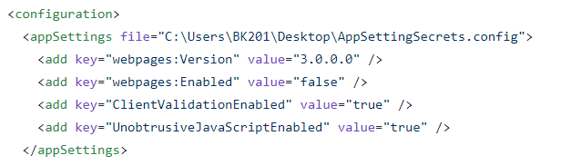
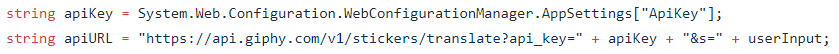
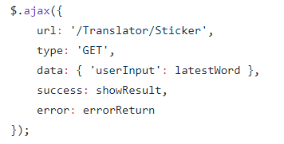
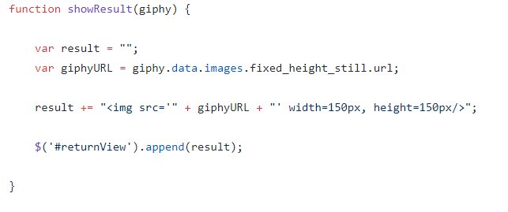
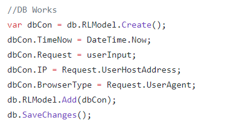
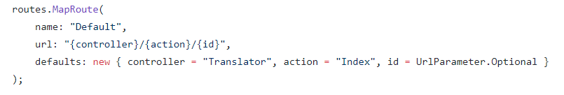

Yumin Chen, CS460, HW#7
Building a single page AJAX dynamic page using external API.
API key is the way to get request from the API service provider, but this key is so important so here is the code for hiding the API but use it on MVC application:

Follow code show how to use API key on MVC project:

Using a external JS to send ajax request back and forth, follow show the ajax section on JS:

After process for custom method on Controller,the method return json result and call JS method to get the picture url:

One requirement from this project is to log user activity, follow code show the step:

Config the MVC routing to make custom app start route, so when the app start it start with the right page:
